The road to Villalago begins at the Cocullo motorway exit. And going further on , the landscape opens up with a stunning view. Far ahead of us , the village of Castrovalva rises majestically on the rock — a vision so dramatic it stops you in your tracks. This is the beginning of the Gole del Sagittario.
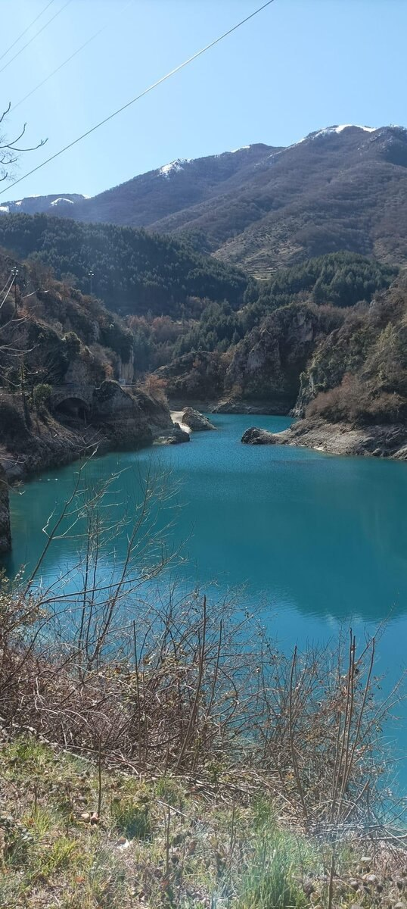
The gorge opens as soon as you leave Anversa degli Abruzzi , another beautiful "timeless sentinel"
The gorge is one of those places that makes you feel beautifully small. On the left, the valley drops away into a breathtaking depth. On the right, mountain walls of rock rise so high they seem to touch the sky — or fall on top of you. I always drive through here in silence, with a deep sense of respect. Those unreachable peaks, the falcons circling above, the raw power of nature — I feel small, and I am perfectly fine with that. I have no desire to conquer anything here.
I feel small, and I am perfectly fine with that. I have no desire to conquer anything here.
We followed the course of the Sagittario river, stopping for a moment at the bridge leading to the hermitage of San Domenico. A few photos, a few quiet moments. And then — impossible to ignore — the stunning blue waters of the artificial lake opened before us.
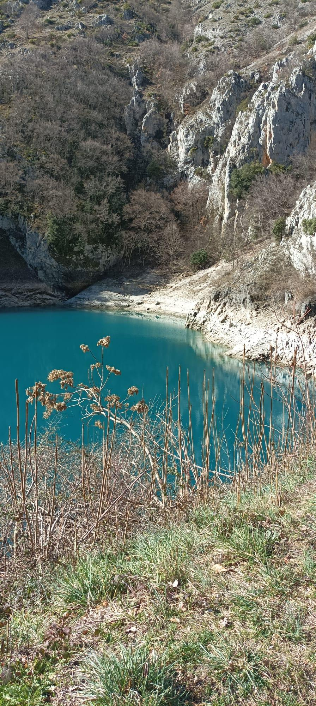
The emerald waters of Lake San Domenico
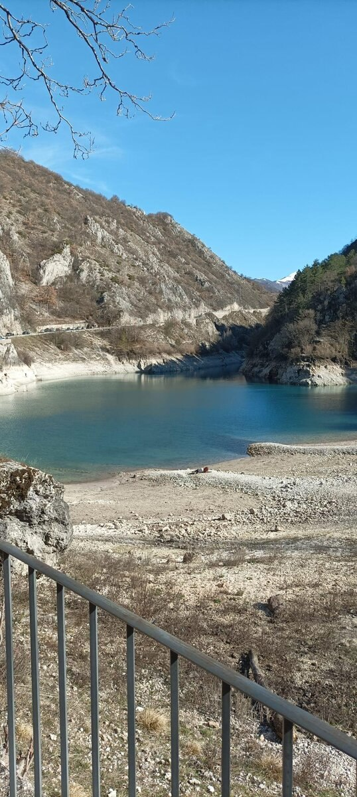
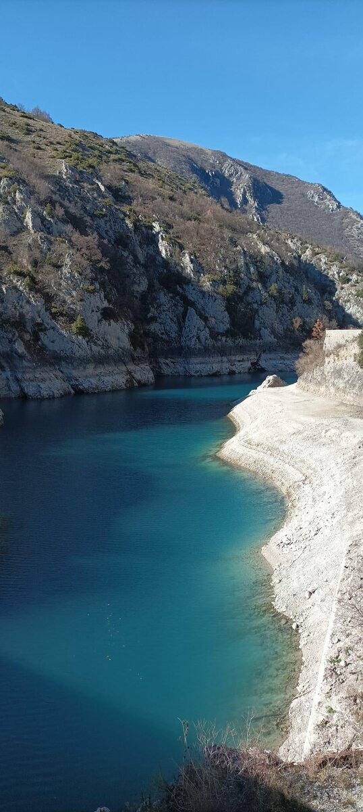
A word of warning for anyone planning the trip: the road is narrow, and parking on the sides is genuinely difficult. Plan accordingly.
Villalago is one of Italy's Most Beautiful Villages — a title it has clearly earned. Its name comes from the Latin Valle de Lacu, recalling the nine lakes that once surrounded the area, most of which have since disappeared. The village dates back to the 11th century, when the Benedictine monk San Domenico Abate founded a monastery in the Sagittario valley. The main church, the Madonna di Loreto, was built between the 1300s and 1400s in Romanesque style. And for those who love unexpected connections: in the 1920s, the Dutch artist M.C. Escher wandered these very streets, finding inspiration for his famous works in the alleys and landscapes of Villalago.
On that Sunday morning, the weather was perfect for taking a walk. The beautiful church welcomes both tourists and pilgrims. The central square has that unhurried energy that you rarely find anymore. We wandered through narrow alleys, small staircases, the smell of honest, homemade cooking drifting from windows. Houses surrounded by flowers and freshly potted plants, welcoming the spring. Some buildings old and closed, others recently restored.
The path leads to a panoramic viewpoint overlooking the valley toward the hermitage. Standing there, high above, the cars below seem small ants. The silence is generous.
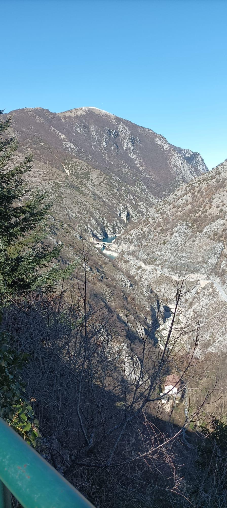
From the belvedere, the valley stretches far below
On the way back through the valley, the road offered one more gift: a group of fallow deer resting in the shade at the foot of the mountain. Calm, undisturbed, seemingly at ease with the occasional passing car. We slowed down, careful not to disturb them. I took a few photos from a distance — always with a sense of caution and respect. They were beautiful, and that was enough.
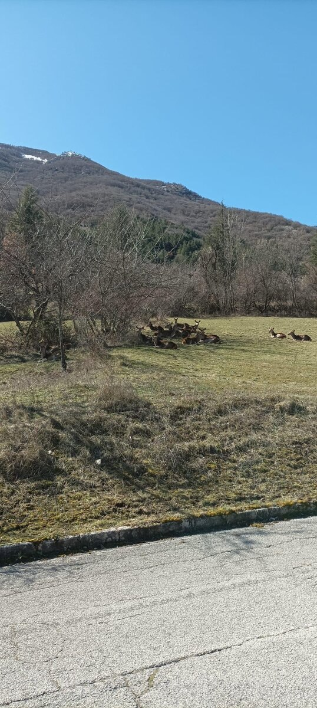
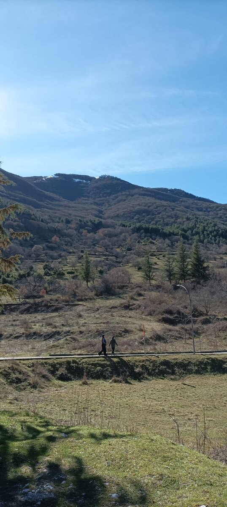
At times, people approach too closely, being loud and holding their phones ready to snap tens of pictures. These animals may seem comfortable around people, but that is not an invitation. Silence is owed to them. So is distance. You can admire something beautiful without needing to grab it.
In the afternoon, we stopped at the bridge to the Hermitage of San Domenico. The local priest welcomed us warmly. The story of San Domenico is a fascinating one — a life of sacrifice and devotion, drawing pilgrims from far away even today. Inside, you can visit the cave where he sought refuge, and see paintings depicting the miracles attributed to him. It is a place that carries weight, in the quiet way that only truly old things can.
The Hermitage of San Domenico
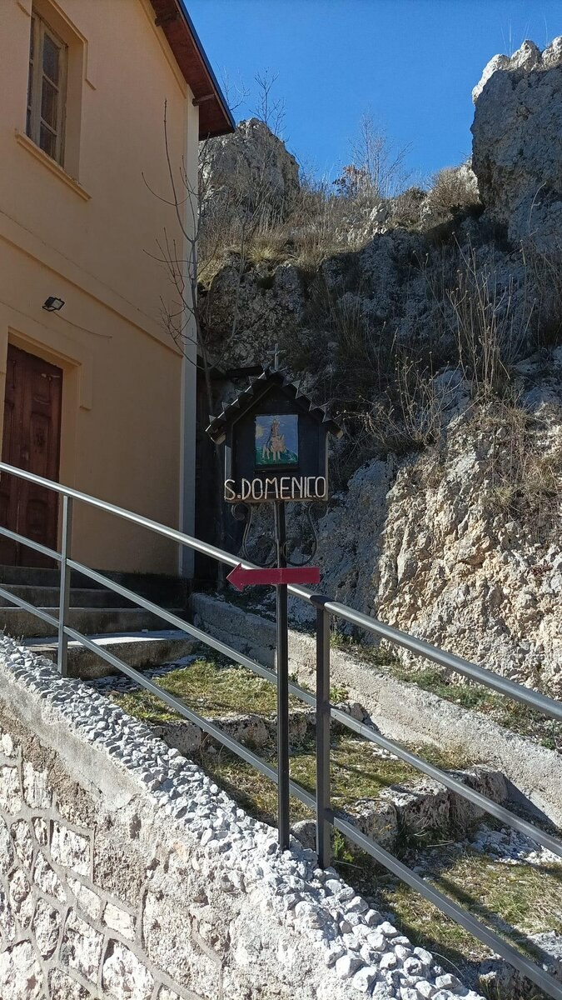
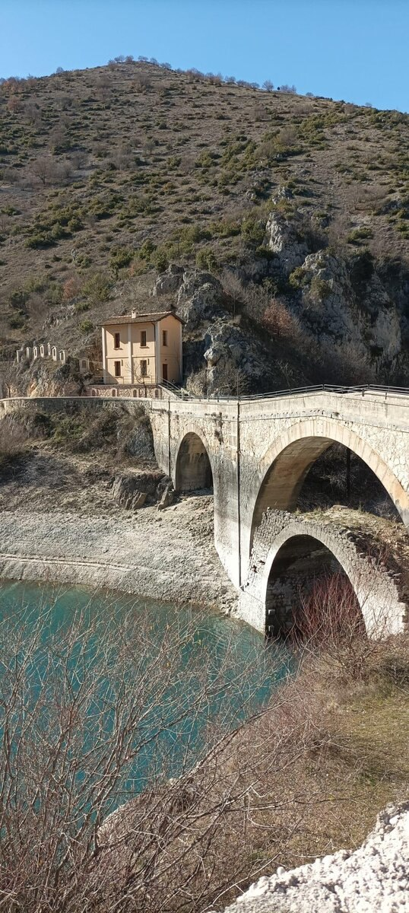
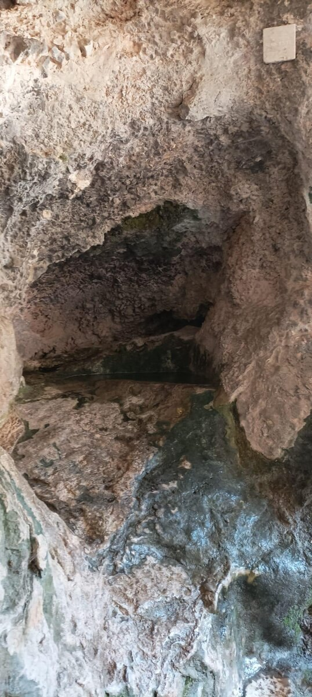
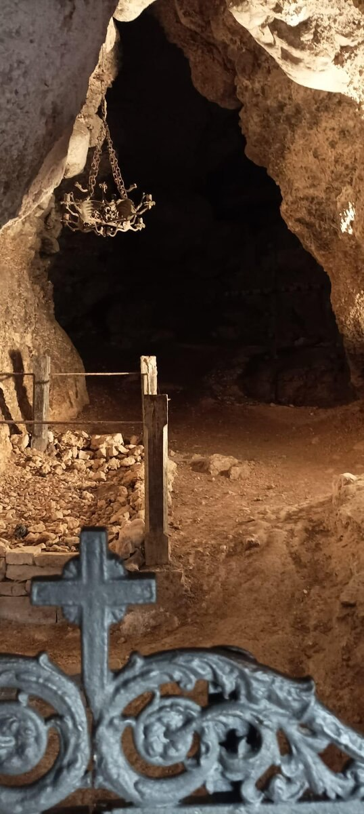
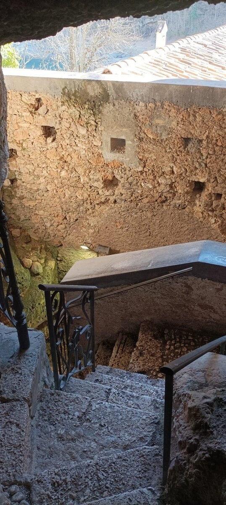
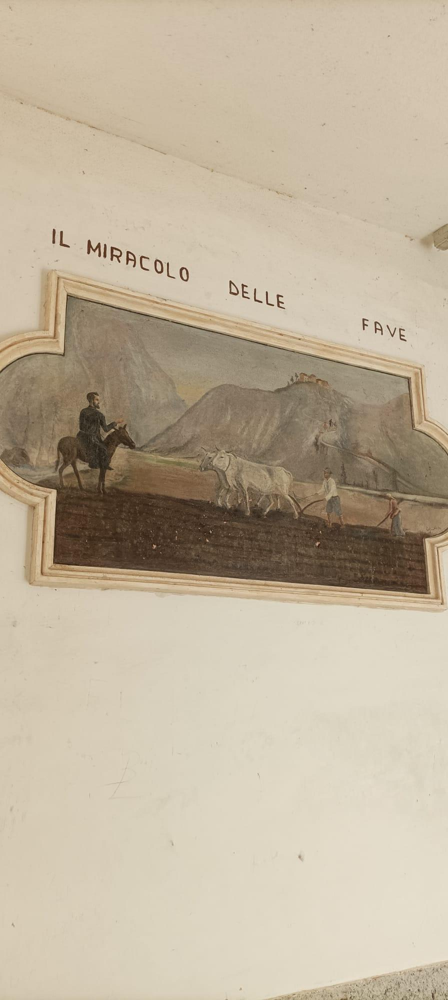
Paintings of the miracles of San Domenico, inside the hermitage
The day ended with a walk along the shore of the lake. The sun sets early here, tucked between the mountains, and evening arrives gently. We drove home with full hearts and light spirits. Villalago is the kind of place that makes you want to come back, to explore the other small villages nearby, to keep discovering what this territory quietly holds.
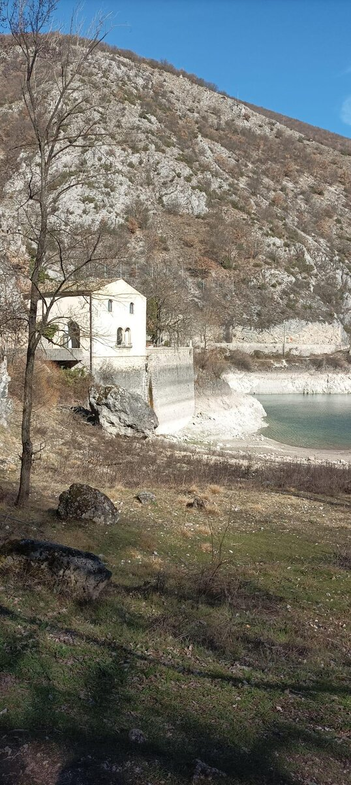
The lake at the end of the day
There are treasures here. You just have to slow down enough to find them.